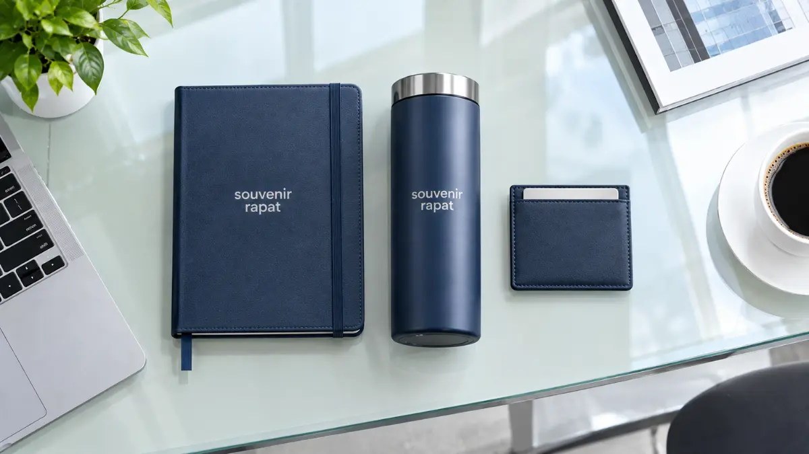

Souvenir Rapat Perusahaan Samarinda untuk Meeting Bisnis

Souvenir Kantor Jakarta - Souvenir rapat perusahaan Samarinda dapat berupa notebook, pulpen, tumbler, card holder, power bank, atau gift set yang diberikan kepada peserta meeting, karyawan, maupun relasi bisnis, umumnya dengan opsi custom logo perusahaan.
Souvenir rapat perusahaan Samarinda berfokus pada produk yang mendukung suasana meeting bisnis yang produktif dan profesional. Rapat internal, rapat dengan klien, dan rapat direksi memiliki kebutuhan karakter produk yang berbeda.
Notebook dan pulpen menjadi kombinasi paling umum untuk meeting rutin, sementara gift set lebih sering dipilih untuk rapat dengan klien atau direksi. Custom logo membuat souvenir rapat sekaligus berfungsi sebagai media representasi korporat melalui Souvenir Kantor Jakarta.
- Souvenir untuk Rapat Perusahaan di Samarinda
- Souvenir untuk Rapat Internal
- Souvenir untuk Meeting dengan Klien
- Souvenir untuk Rapat Direksi dan Manajemen
- Apa Saja Pilihan Produk Souvenir Rapat Perusahaan Samarinda?
- Bagaimana Paket Souvenir untuk Meeting Perusahaan Disusun?
- 1. Paket Notebook dan Pulpen
- 2. Paket Notebook, Pulpen, dan Tumbler
- 3. Paket Corporate Gift untuk Klien
- Apa Perbedaan Souvenir untuk Berbagai Skala Rapat?
- Meeting Internal dengan Peserta Terbatas
- Rapat Perusahaan dengan Banyak Peserta
- Meeting dengan Klien dan Partner Bisnis
- Pesan Souvenir Rapat Perusahaan Samarinda
- Kesimpulan
- FAQ Seputar Souvenir Rapat Perusahaan Samarinda
Souvenir untuk Rapat Perusahaan di Samarinda
Souvenir rapat perusahaan berperan sebagai pelengkap kegiatan meeting sekaligus media corporate gift yang mendukung kesan profesional perusahaan di mata peserta maupun mitra bisnis.
Souvenir untuk Rapat Internal
Rapat antar-divisi, evaluasi kerja bulanan, atau agenda rapat koordinasi internal lainnya biasanya cukup menggunakan souvenir sederhana dan fungsional seperti notebook dan pulpen sebagai kelengkapan pencatatan.
Souvenir untuk Meeting dengan Klien
Untuk pertemuan dengan relasi bisnis atau prospek klien penting, souvenir yang dipilih umumnya memiliki kesan lebih profesional dan prestisius, seperti notebook hard cover dengan finishing eksklusif atau card holder kulit sintetis.
Souvenir untuk Rapat Direksi dan Manajemen
Rapat pada level dewan direksi atau manajemen eksekutif sering menggunakan produk dengan kesan premium, seperti gift set eksklusif atau kombinasi notebook, tumbler stainless, dan card holder berbalut box mewah.

Apa Saja Pilihan Produk Souvenir Rapat Perusahaan Samarinda?
Pilihan produk yang umum digunakan untuk souvenir rapat perusahaan adalah notebook, pulpen, tumbler, card holder, power bank, pouch, dan gift set, dipilih sesuai skala dan tingkat formalitas agenda meeting:
| Produk | Cocok untuk | Kesan |
|---|---|---|
| Notebook | Rapat internal & meeting klien | Profesional |
| Pulpen | Meeting & corporate gift | Praktis |
| Tumbler | Rapat perusahaan | Fungsional |
| Card holder | Meeting bisnis | Elegan |
| Power bank | Corporate meeting | Modern |
| Pouch | Meeting & employee gift | Fungsional |
| Gift set | Direksi & klien | Premium |
Bagaimana Paket Souvenir untuk Meeting Perusahaan Disusun?
Paket souvenir untuk meeting perusahaan biasanya disusun mulai dari kombinasi ringkas seperti notebook dan pulpen, hingga paket corporate gift yang lebih lengkap untuk klien atau direksi:
1. Paket Notebook dan Pulpen
Kombinasi ini cocok untuk meeting rutin operasional harian yang tidak memerlukan kesan terlalu formal namun tetap memberikan alat tulis lengkap bagi setiap peserta rapat.
2. Paket Notebook, Pulpen, dan Tumbler
Kombinasi ini dipilih ketika perusahaan ingin memberikan souvenir yang lebih lengkap, fungsional, dan dapat digunakan jangka panjang oleh peserta rapat di ruang kerja masing-masing.
3. Paket Corporate Gift untuk Klien
Paket ini biasanya menggabungkan produk premium seperti card holder, power bank, atau tumbler custom logo dengan packaging hard box representatif, cocok untuk pertemuan dengan klien maupun mitra bisnis penting.
Apa Perbedaan Souvenir untuk Berbagai Skala Rapat?
Perbedaan utama souvenir untuk berbagai skala rapat terletak pada jumlah peserta dan tingkat formalitas, yang memengaruhi jenis produk serta cara pengemasannya:
Meeting Internal dengan Peserta Terbatas
Souvenir cukup sederhana dan fungsional karena tujuannya lebih ke arah kelengkapan kerja dan notulensi pencatatan meeting internal.
Rapat Perusahaan dengan Banyak Peserta
Produk yang dipilih perlu mempertimbangkan efisiensi distribusi, seperti produk yang ringan, tidak mudah rusak, dan mudah dibagikan kepada seluruh peserta forum.
Meeting dengan Klien dan Partner Bisnis
Kesan profesional menjadi prioritas utama, sehingga pemilihan produk cenderung ke arah yang lebih premium dan eksklusif dibanding meeting internal biasa.
Pesan Souvenir Rapat Perusahaan Samarinda
Souvenir Kantor Jakarta menyediakan pilihan souvenir corporate untuk kebutuhan meeting, rapat perusahaan, hingga corporate gift yang dapat dipesan untuk kebutuhan perusahaan di Samarinda dengan opsi custom logo presisi.
Hubungi Souvenir Kantor Jakarta untuk melihat katalog souvenir rapat dan mendapatkan penawaran harga terbaik sesuai skala agenda perusahaan Anda.
Pesan Souvenir Rapat Perusahaan Samarinda
Souvenir Kantor Jakarta menyediakan paket souvenir meeting dan corporate gift set custom logo eksklusif untuk rapat internal, meeting klien, dan jajaran direksi di Samarinda.
Chat WhatsApp SekarangKesimpulan
Souvenir rapat perusahaan Samarinda dapat disesuaikan dengan konteks meeting, mulai dari rapat internal, meeting dengan klien, hingga rapat direksi. Pemilihan produk sebaiknya mempertimbangkan tingkat formalitas dan jumlah peserta agar souvenir yang diberikan sesuai kebutuhan dan kesan yang ingin ditampilkan perusahaan.